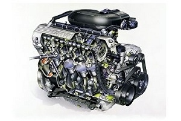

Немецкий двигатель BMW M40B18: технические характеристики, плюсы и минусы.

Среди автолюбителей ходят истории о немецких двигателях, чей пробег составил более 1 миллиона километров, и
тому
немало подтверждений. Если спросить у автомехаников, какой двигатель самый надежный и долговечный, то
большинство
из них ответит, что это немецкие моторы BMW и Mercedes-Benz. К списку достоинств следует добавить удивительно
бойкий нрав и не высокий аппетит. Рассмотрим немецкий двигатель BMW M40B18, его технические характеристики,
плюсы
и минусы.
Основные характеристики
выпускался с 1987 по 1994 год включительно;
блок цилиндров сделан из чугуна, поэтому этот мотор весит столько же, сколько и шестицилиндровые с алюминиевым
блоком;
подача топлива осуществляется инжекторной системой;
четыре цилиндра, каждый имеет по два клапана;
поршень ходит по вертикали 81 мм;
цилиндр обладает диаметром 84 мм;
двигатель работает на степени сжатия девять единиц;
точный объем агрегата составляет 1796 кубических сантиметров;
мотор выдает 113 лошадиных силы в своем пике;
крутящий момент составляет 162 Нм в пике мощности;
питается девяносто вторым бензином;
не соответствует никаким экологическим нормам;
весит, как уже сказано, много. Примерно сто тридцать два килограмма;
расходует для своей малой мощности много: больше десяти литров по городу, около семи по трассе и восемь —
девять в смешанном режиме;
потребление масла большое. Оно может достигать тысячи грамм за одну тысячу километров пробега;
масло, которое нужно заливать в двигатель: 5W-30; 5W-40; 10W-40; 15W-50;
масла в моторе примерно четыре литра;
заменять его нужно каждые семь — десять тысяч километров;
работает при температуре девяносто — сто градусов;
ресурс заводом не указан, но на практике он составляет более трехсот тысяч километров;
форсированием вы достигнете немногим более ста пятидесяти лошадиных сил;
устанавливался на БМВ Пятой и Третьей серии с индексом 18i.
Описание двигателя
Двигатель BMW M40B18 с четырьмя цилиндрами пришел на смену старому M10. В нем имеются гидрокомпенсаторы, так что
клапана не нуждаются в такой частой регулировке. Здесь, в отличие от шестицилиндровых двигателей БМВ того времени, используется
ремень газораспределительного механизма, он ненадежен и выходит из строя вместе со своим роликом каждые сорок —
сорок пять. Если этот ремень оборвется, то загнутся клапана, а это уже повлечет за собой большие вложения.
Минусы данного двигателя
Двигатель может стучать. Причиной чаще всего являются уже непригодные для работы распределительные валы,
гидрокомпенсаторы или коромысла. Их нужно проверить в первую очередь;
Плавающие обороты. Датчик массового расхода воздуха имеет воздуховод. Если там имеется негерметичность или
какие-то повреждения, то вы должны устранить ее (их);
Двигатель начинает проваливаться. Причина — форсунки. Если они загрязнились, то их нужно почистить;
Перегревание. Причиной может быть система охлаждения, а точнее один или несколько из ее элементов. Термостат,
помпа, радиатор. В ней могут быть пробки. Поэтому попытайтесь стравить воздух;
Двигатель начинает проваливаться. Причина — форсунки. Если они загрязнились, то их нужно почистить;
Не может завестись. Проблемой могут быть:
бензонасос
свечи
высоковольтные провода
катушка зажигания
Форсирование
Вы сразу должны понимать, что тюнинг данного двигателя очень невыгоден. Проще приобрести М50 и поставить его
взамен этого четырехцилиндрового малыша. Но если вы все-таки осмелились, то можете попробовать строкер. Вы
можете увеличить объем до 2.1 литра с помощью колена от M47D20, поршни от S50B30 и шатуны от M44B19. Все
остальное (впуск, выпуск, головка блока цилиндров и ГРМ) от М44. Все эти махинации вам дадут 150-160 лошадиных
сил. Ставить турбину или компрессор просто невозможно, т.к. это очень дорого и трудно, тем более для такого
древнего двигателя.